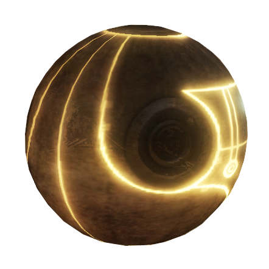

Altaïr Ibn-La'Ahad (1165–1257) meaning "The Flying Eagle, Son of Nobody", was born to a Syrian-Muslim father,
Umar Ibn-La'Ahad, and his wife, Maud, who died of complications during childbirth.
As the years passed, Altaïr grew to be a skilled Assassin, but was very arrogant. He once led the retaking of Masyaf after Al Mualim,

the mentor of the Order, was captured, which earned him the respect of his fellow Assassins.
He was then sent on a mission to
Solomon's Temple to recover a hidden artifact. The mission was a failure as Altaïr broke the tenets of the Order
and left his fellow Assassins to face the Templars alone after he was thrown from the room by Robert de Sablé.
Altaïr fled to Masyaf to report his failure but was followed, resulting in Masyaf being attacked by the Templars.
The Assassins were able to fend off their enemies, but Altaïr was punished by being stabbed by Al-Mualim. Altaïr later awoke and
discovered that he had been stripped of his rank, but was told by Al-Mualim that he would be able to recover it if he could kill
nine Templars in the Holy Land. Altaïr was able to assassinate the first eight and discovered that his last target was Robert
himself. He made his way back to Jerusalem where he met Robert. However, as he removed the helmet of the Templar,
he found out that he had not faced Robert but a girl. He allowed her to live and she told him that Robert
had made his way to Arsuf. Altaïr followed and finally killed Robert, who revealed that Al Mualim was actually using
Altaïr to obtain the Apple of Eden, a powerful artifact left behind by the First Civillization. Altaïr returned to
Masyaf,where Al Mualim confirmed what Robert had said. Altaïr, aided by a number of other Assassins,
fought his way to Al Mualim, who had used to the artifact from Solomon's Temple to enslave the people of
Masyaf. Altaïr and his mentor battled each other and Altaïr finally killed him, taking his place as mentor.